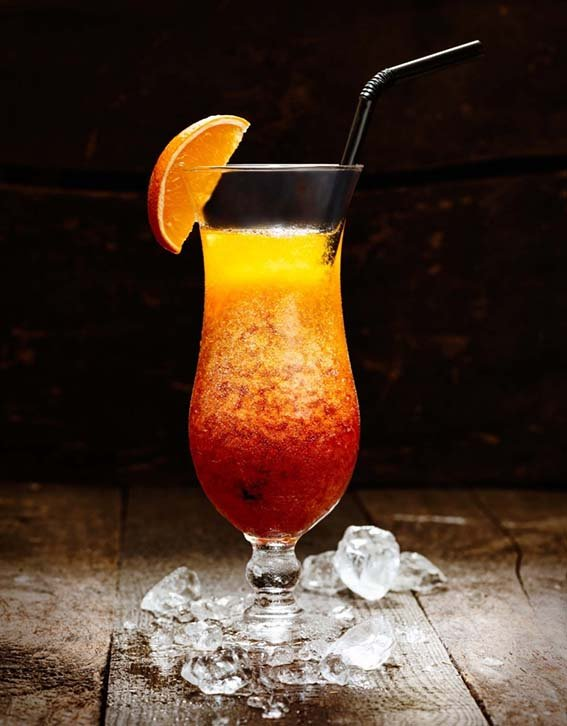
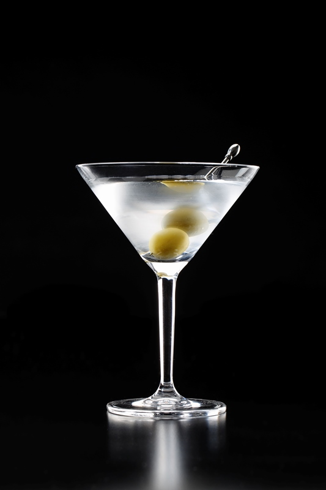
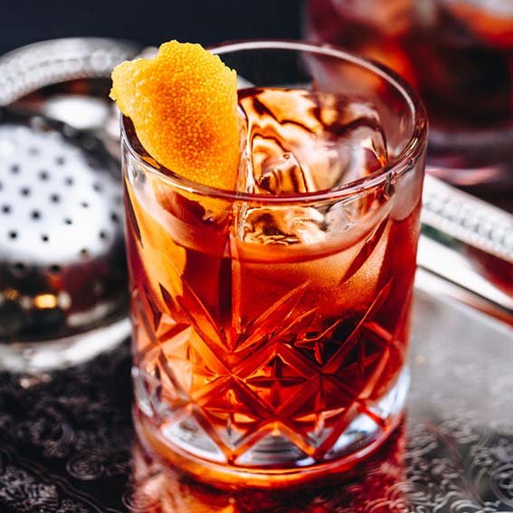

Tragos
Aca encontraras muchos tipos de tragos desde dulces, citricos, amargos, exoticos y muchos mas!
Te invitamos a probarlos todos.
Feel the Cocktail
Tragos de Verano
Sex on the beach
Decoración Rodaja de naranja.
Observaciones Se elabora directamente en vaso de higball con hielo. Receta IBA
Tragos de Invierno
Cafe Irlandes

Decoración Se puede espolvorear por encima con café soluble.
Aderezos Se calienta el whiskey, se pone el café caliente, se añade el azúcar y se coloca la nata flotando encima.
Observaciones Se prepara directamente en un vaso o copa resistente al calor. Receta IBA.
Tragos Clasicos
Martini
Decoración 1 Aceituna verde.
Observaciones Se elabora en vaso mezclador. Se sirve en copa de cocktail. Receta IBA.
Negroni
Decoración Rodaja de naranja.
Observaciones Poner todos los ingredientes directamente en un vaso old fashioned con hielo, remover suavemente.